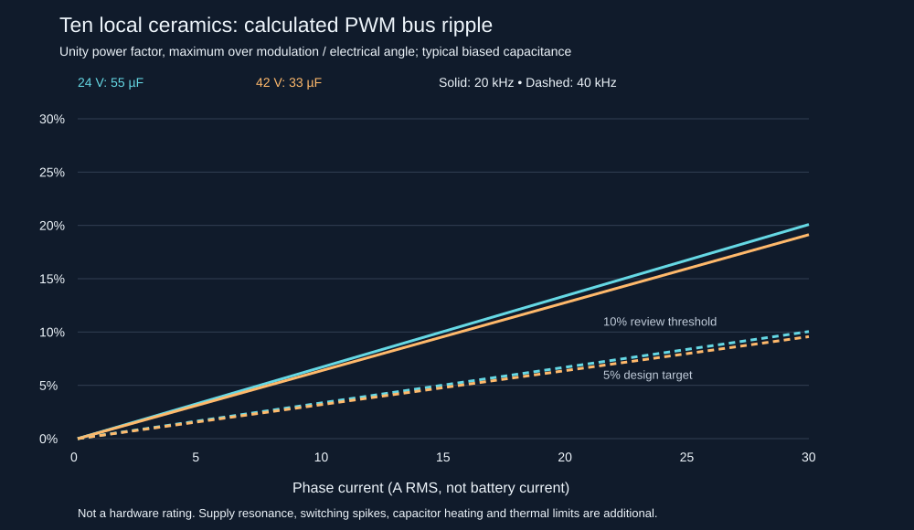

ShiroFOC P3 • Focused feasibility study • 20 October 2026 • Discussion only
Can ten 10 µF ceramics support the motor controller?
Yes, a useful operating envelope is plausible without an external capacitor. The proposed bank does not yet justify a blanket 25 A RMS / 42 V rating. Short supply wiring, PWM frequency, motor operating point and regeneration handling matter as much as nominal capacitance.
Scope: evaluates your proposed ten-cap bank using the capacitor MPN in P3. The saved schematic still contains the earlier 48 fitted 10 µF capacitors plus six DNP positions. This study intentionally overrides that count with ten and credits no other caps. No PCB or schematic was edited. This is an analytical feasibility study, not a completed board validation or thermal rating.
1. The capacitance available at operating voltage
The selected Samsung CL32Y106KCVZNWE is a 10 µF, 100 V, X7S, ±10%, 1210 ceramic. Its voltage rating does not guarantee 10 µF at high bias. Approximate readings from Samsung’s typical DC-bias graph give:
| Bus voltage | Ten-cap bank, typical | 5% ripple current at 20 kHz | At 40 kHz |
|---|
| 18 V | ≈68 µF | 6.9 A RMS | 13.8 A RMS |
| 24 V | ≈55 µF | 7.5 A RMS | 14.9 A RMS |
| 36 V | ≈39 µF | 7.9 A RMS | 15.9 A RMS |
| 42 V | ≈33 µF | 7.8 A RMS | 15.7 A RMS |
The current columns use the unity-power-factor PWM envelope below and a chosen 5% peak-to-peak target. They are not safe operating limits. The capacitance readings are typical, approximately rounded and have not been temperature/aging qualified. A sensitivity case with only 72% of those values increases ripple by 39%; this is an illustrative allowance (0.9 × 0.8), not a guaranteed combined minimum.
The schematic also includes local 1 µF and 4.7 µF VM capacitors. If retained, their effective capacitance improves these results. For example, an extra effective 10 µF reduces the 42 V result by 33/43 ≈ 23%. Their present placement and effective values are not credited here. Source: Samsung article, page 3 DC-bias curve.
2. Normal switching ripple
A numerical switching model uses balanced three-phase currents, center-aligned space-vector-equivalent PWM, all electrical angles and the linear modulation range. The supply provides average current during each PWM cycle; the capacitor handles the difference. Charge is integrated exactly between switching events.
ΔVpp = k × Iphase,peak / (fPWM × Ceffective), with Iphase,peak = √2 × Iphase,RMS.
- Unity voltage/current power factor: maximum k = 0.125.
- Power factor 0.8: maximum k ≈ 0.165, approximately 32% more ripple.
- Full idealized angle/modulation/power-factor envelope: k = 0.25, twice the unity-power-factor table. This is not a bound on real wiring resonance or switching spikes.
| Phase current | 24 V, 20 kHz | 42 V, 20 kHz | 42 V, 40 kHz |
|---|
| 5 A RMS | 0.80 Vpp | 1.34 Vpp | 0.67 Vpp |
| 10 A RMS | 1.61 Vpp | 2.68 Vpp | 1.34 Vpp |
| 15 A RMS | 2.41 Vpp | 4.02 Vpp | 2.01 Vpp |
| 20 A RMS | 3.21 Vpp | 5.36 Vpp | 2.68 Vpp |
| 25 A RMS | 4.02 Vpp | 6.70 Vpp | 3.35 Vpp |

5% is a design target, not a point at which FOC stops working. Around 10% needs closer review of voltage headroom, sampled bus-voltage accuracy, current regulation and protection behavior. At 25 A RMS / 42 V / 20 kHz, the table predicts 6.7 Vpp (16%); poor power factor can increase that, so this is a demanding operating point. At 40 kHz it becomes 3.35 Vpp (8%), before those additional effects.
3. Why slow robotic joints can be easier
High phase current at low speed often needs little average winding voltage. Most current then recirculates within the bridge rather than coming in large sustained bursts from the bus. This does not remove winding, MOSFET or shunt heating.
For example, with modulation m = 0.1 (phase-voltage fundamental peak = 5% of VM) and unity power factor, k ≈ 0.0347. At 25 A RMS / 42 V / 20 kHz the estimated ripple is 1.86 Vpp, versus the 6.7 Vpp maximum over modulation. At m = 0.2 it is about 3.41 Vpp. These examples require a motor whose resistance/back-EMF permits those operating points; they are not blanket stall-current ratings. At standstill, “phase RMS” here means the equivalent sinusoidal current-vector magnitude, not a time average of a rotating waveform.
- Low-speed positioning, holding, modest torque: plausible use cases; often thermally limited first.
- 5–10 A RMS while moving: a credible development target with short paired supply wires and controlled regeneration. 20 kHz may be workable; 30–40 kHz gives useful capacitive-ripple margin.
- 15–25 A RMS while moving: conditional on effective capacitance, motor power factor, PWM and supply wiring. Do not label the entire range supported yet.
- High-speed/high-current operation or aggressive reversals: the most demanding cases for this proposed bank. An external capacitor is not the only possible remedy, but ten of these parts cannot establish the rating on paper.
4. Supply wiring can help—or amplify the ripple
A close, low-impedance source can supply part of the PWM ripple. However, lead inductance and the ceramic bank also form an LC resonance. “The battery is stiff” alone is insufficient.
The following is an illustrative linear R–L source model: 33 µF, 50 mΩ total series resistance, 20 kHz PWM, 10 A RMS, m = 2/3, unity power factor at the worst unity-PF electrical angle. The input-current waveform is two equal pulses per PWM period, making 40 kHz important. Inductances are assumptions, not measurements or asserted cable-length conversions. Capacitor ESR/ESL, distributed wiring and controller response are omitted.
| Supply-loop inductance (assumed) | LC resonance | Calculated bus ripple |
|---|
| 0.1 µH | 87.6 kHz | 1.24 Vpp |
| 0.2 µH | 62.0 kHz | 1.95 Vpp |
| 0.5 µH | 39.2 kHz | 5.64 Vpp |
| 1.0 µH | 27.7 kHz | 4.44 Vpp |
| 2.0 µH | 19.6 kHz | 3.36 Vpp |
The capacitor-only result for this case is 2.68 Vpp. The assumed 0.5 µH case resonates near 40 kHz and reaches 5.64 Vpp. Thus the main table is neither a guaranteed pessimistic nor optimistic prediction. Measure the actual harness; an RC damping network may address resonance without a large external bulk capacitor. The existing DNP damping provision needs tuning, not blind population.
5. Regeneration and capacitor heating are separate limits
Using constant 33 µF, the energy from 42 V to the project’s nominal 45.8 V hardware brake threshold is only 5.51 mJ. At 100 W of net regenerative power that buys about 55 µs. Real capacitance decreases further with rising voltage. This threshold is a brake-command threshold from the project document, not a safe absolute voltage rating.
The battery must be able to accept braking energy, or the chopper must have a suitable external resistor, or firmware must limit/dissipate regenerative energy through a validated strategy. A fitted chopper MOSFET with no resistor cannot absorb useful braking energy. This applies even when ordinary PWM ripple is acceptable. A full battery or BMS disconnect also changes the situation. A source-only bench PSU is not equivalent to a receptive battery.
The ideal model reaches capacitor-bank RMS current of about 0.5 × phase peak = 0.707 × phase RMS. At 25 A RMS that is up to 17.7 A RMS for the bank, or 1.77 A per capacitor with perfect sharing. Actual sharing, ESR versus frequency, bias and temperature must be checked. No Samsung ripple-temperature curve or board thermal model was validated in this study. Higher PWM frequency reduces capacitive voltage ripple but does not proportionally remove capacitor RMS current; it also raises switching losses.
6. What the moteus comparison actually shows
The public r4.11 schematic at the pinned commit has C22–C37: sixteen 10 µF, 50 V TDK C3216X7R1H106K160AE capacitors on V+ to V−, plus smaller decouplers. C40–C54 are DNP. That is 160 µF nominal versus your proposed 100 µF. Both parts lose capacitance with DC bias; a numerical effective-capacitance ratio between the two has not been established here.
The product page gives 10–44 V operation, 100 A peak phase current, 12/32 A continuous without/with thermal management and 15–60 kHz PWM. Do not equate its advertised current values to this report’s sinusoidal RMS values without confirming the current convention. Its electrical guide explicitly discusses hot-plugging, wiring and regeneration, and recommends lower voltage for sharp regenerative loads without a continuously receptive battery.
Your architecture is credible. Similar footprint and headline current are not enough to transfer moteus’s tested operating envelope to P3, especially with a different capacitor bank and firmware.
7. Decision and minimum validation
Keep the no-external-cap objective. Treat roughly 5–10 A RMS with short power wiring as an initial development envelope, then expand it using measurements. For 20–25 A RMS motion, investigate 30–40 kHz and/or greater effective capacitance within the available footprint before committing to a rating. At 42 V the limited headroom to the brake thresholds makes transient behavior particularly important. Lower voltage helps headroom, although the percentage PWM-ripple calculations are surprisingly similar across 18–42 V because capacitance increases as voltage falls.
- Measure VM-to-power-GND at the bridge with a suitable differential probe, including startup, current steps, steady PWM, deceleration and reversals. Use both a bandwidth-limited ripple view and full-bandwidth spike view. Do not connect an earth-referenced probe ground to a switching node.
- Use the actual shortest and longest intended paired supply harnesses, at minimum and maximum bus voltage. Log brake activation and current-loop errors, not only bus averages.
- Test low/mid/high modulation at 5, 10, 15, 20 and 25 A RMS only as thermal/current/protection measurements permit; compare 20 and 40 kHz. Check maximum instantaneous bus voltage and minimum voltage headroom, not only Vpp.
- Measure capacitor and bridge temperatures and confirm current-sampling windows/deadtime/firmware execution at the chosen PWM frequency. Validate loss of regenerative sink.
Limits of this study: no full PCB DRC, parasitic extraction, motor R/L identification, temperature simulation, component-lifecycle review or hardware test. No SPICE executable was available; the accompanying NumPy models perform ideal switching charge integration and exact linear state-transition calculations. Source-model examples assume ideal constant capacitance and do not capture closed-loop motor/source interactions. Motor phase-current ripple within each PWM cycle is omitted; a very low-inductance motor can add substantial ripple beyond this model. Other local capacitors were excluded deliberately. A reproducible numerical model is evidence for feasibility, not proof of a safe board rating.
Artifacts: numerical sweep CSV • assumptions and coefficients • PWM model • source model • report generator.